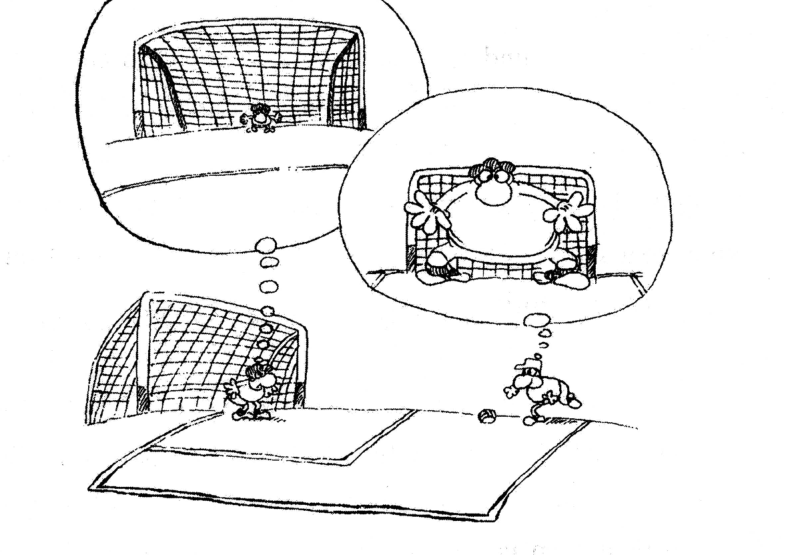

A小作文 · 建议信（10 分）
Write a letter to your university library, making suggestions for improving its service.
You should write about 100 words on ANSWER SHEET 2.
Do not sign your own name at the end of the letter. Use "Li Ming" instead.
Do not write the address. (10 points)
💭 审题三件事
- 写给谁 → 决定称呼和语气。"your university library" 是机构、收信人不确定，所以 Dear Sir or Madam；一旦这么开头，全文就得端着正式语体（不缩写、不口语）。
- "suggestions" 是复数 → 至少两条，最好三条。阅卷按"内容要点是否完整"给档，只提一条建议直接掉一档。每条别停在口号（improve the service ×），要落到可执行的动作：延长到几点、增订什么、加什么系统。
- 先想中文再翻英文最容易翻车。建议信的内容分不难拿，难在"三条建议长得一模一样"。写之前先给三条建议各挑一个不同角度：时间（开放时间）／资源（藏书电子资源）／环境（噪音座位）——角度一分开，句式自然就不重复了。
✍️ 范文（ 词 · 🟡 亮点点击看讲解）
Dear Sir or Madam,
身份+目的As a regular user of our university library, I am writing to put forward several suggestions concerning its service.
建议 ①时间To begin with, the opening hours are far from convenient for those who study late; it would be advisable to extend them to 10 p.m. and to open the reading rooms at weekends. ②资源In addition, our collection of foreign journals and electronic databases leaves much to be desired; an annual budget for updating it would be money well spent. ③环境Finally, noise in the reading area is a constant complaint; a designated silent zone and a seat-booking system would solve it at little cost.
期待采纳I would be grateful if these suggestions could be taken into consideration. Thank you for your time.
Yours sincerely,
Li Ming
作为本校图书馆的常客，我写信是想就馆内服务提几条建议。
首先，目前的开放时间对晚间学习的同学来说很不方便；建议延长至晚上十点，并在周末开放阅览室。其次，外文期刊与电子数据库的馆藏尚有很大提升空间，每年拨出一笔经费用于更新，这钱花得值。最后，阅览区的噪音一直是大家抱怨的问题；设立专门的静音区并启用线上座位预约系统，花不了多少成本就能解决。
如蒙采纳，不胜感激。感谢您抽出时间。
此致 李明
- 格式题目明令不写地址——很多人背模板背出肌肉记忆，右上角先写一串地址，纯扣分。日期同理，email/信件在考研作文里都不需要。
- 格式签名必须是 Li Ming；写真名有判零风险（这是"违规"不是"错误"）。
- 内容建议信写成投诉信：通篇 "The library is terrible / I am writing to complain"，一条像样的建议都没有 —— 直接掉到二档。抱怨一句就要跟一句怎么改。
- 内容建议空心化："I suggest you improve the service and buy more books." 这句里没有一个可执行动作，阅卷视同没写。数字（10 p.m.）、名词（silent zone、seat-booking system）就是内容分。
- 语言Dear Sir or Madam 严格的英式规范配 Yours faithfully，Dear + 具体姓名才配 Yours sincerely。考研阅卷两者都算对，用 Yours sincerely 最保险；但别写成 Best wishes（太随便）或 Yours（不完整）。
- 三段式而不是两段式。建议信的中间段是"给分主体"，一定要单独成段、内部用 To begin with / In addition / Finally 打点——阅卷人是扫段落找要点，序号词让他 3 秒钟数清你写了几条。
- 每条建议内部是"分号结构"：问题 ; 做法。用分号而不是句号，读起来是一个完整判断，还顺手秀了一个标点层次（考场上分号用对，语言分是加分项）。
- 结尾只写两句。约 100 词的信，收尾多写一句就要从建议里挤掉一条——要点＞辞藻。
B大作文 · 图画作文（20 分）
Write an essay of 160–200 words based on the following drawing. In your essay, you should
1) describe the drawing briefly,
2) explain its intended meaning, and then
3) support your view with an example/examples.
You should write neatly on ANSWER SHEET 2. (20 points)

- 现实层（画面下方）：一个普通球门，守门员站在门前；右边射手正带球准备射门。球门大小很正常。
- 守门员的想象（左上气泡）：球门大得离谱，自己缩成小小一点站在门中央——"这么大的门我怎么守得住"。
- 射手的想象（右侧气泡）：同一个球门被一个巨人般的守门员几乎完全堵死，只剩边角缝——"这门根本射不进"。
- 关键对比：两人看的是同一个球门，却各自在心里把困难放大、把自己缩小。这个"同一个"就是全文的立意支点，第一段必须写出来。
💭 审题：一图两泡，寓意在"同一个球门"
- 先找"图里最不合常理的地方"，那就是寓意的入口。本图不合常理的是：两个气泡里的球门一大一小，可现实里只有一个球门。所以文章讲的一定是"同一个客观对象，被两颗不同的心放大／缩小"——主观心态 vs 客观现实。抓住这句，立意就不会跑到"足球比赛要努力"上去。
- 不要写成"乐观 vs 悲观"。图里两个人都是消极的（守门员怕门大、射手怕人高），没有一方是正面榜样。写成"一个乐观一个悲观"是看错图——这是本题最常见的硬伤。
- 例子先想好再动笔。第三段要求举例，而例子最耗词。考场上最安全的是自己的一段经历（不会记错事实、细节写得出来），其次是众所周知的人物。想例子时先定"这个例子要证明的那半句话"，别举完发现跟论点没关系。
⚠️ 本题特有：第三要求的两种问法，写法完全不同
| Directions 第 3 条 | 第三段该写什么 | 典型出处 |
|---|---|---|
| give your comments （谈你的看法） | 表态 + 建议/展望：In my view, … should … instead of … 。可以不举例。 | 2022 讲座漫画（见该页） |
| support your view with an example/examples （举例支撑） | 必须有例子：A case in point is … + 例子的细节（时间、地点、当时的想法、结果）+ 一句把例子拉回论点。空喊"很多人都这样"不算例子。 | 2007 守门员漫画（本题） |
| describe / interpret / comment三段式变体 | 看清动词再排段：题目要什么，段落就写什么，顺序也照抄题目——这是最省心的结构分。 | 各年通用 |
✍️ 范文（ 词 · 🟡 亮点点击看讲解）
①描图As is symbolically illustrated in the drawing, a player is about to shoot and the goalkeeper stands ready. The two thought balloons, however, reveal a striking contrast: the keeper sees a goal so enormous that he is dwarfed by it, while the shooter pictures the very same goal all but blocked by a giant defender.
②寓意Absurd as the two images may appear, they mirror a mentality that is all too common. Facing a challenge, we instinctively magnify the difficulty and belittle ourselves; such self-doubt is by no means harmless: once we are convinced that the goal is beyond reach, hesitation creeps into every move, and the defeat we dread becomes a self-fulfilling prophecy. Confidence, by contrast, costs nothing yet releases the ability we already possess.
③举例A case in point is my first English speech contest. Before stepping onto the platform, I had pictured an audience waiting to laugh at my accent, and my legs trembled. Yet the moment I reminded myself that they were as ordinary as I was, my voice steadied and I ended up winning third prize. Difficulties, I learned that evening, are seldom bigger than the picture we paint of them in our minds.
这两幅画面看似荒诞，映照的却是一种再常见不过的心态：面对挑战，我们本能地放大困难、贬低自己；而这种自我怀疑绝非无害——一旦认定目标遥不可及，犹豫便渗入每一个动作，我们所恐惧的失败最终自我应验。相反，信心不花一分钱，却能把我们本就具备的能力释放出来。
我第一次参加英语演讲比赛就是一例。上台前，我早已想象好台下的听众正等着嘲笑我的口音，双腿止不住地发抖。可就在我提醒自己"他们和我一样普通"的那一刻，声音稳住了，最终拿了三等奖。那晚我明白：困难，很少大过我们心里为它画的那张图。
- 跑题看成"乐观 vs 悲观"：图里两人都在害怕，没有乐观方。写成"一个积极一个消极"＝没看懂图，立意分基本没了。
- 跑题看到足球就写体育精神／团队合作／坚持锻炼——图的重点全在两个气泡里，气泡才是画家要说的话，草地和球门只是舞台。
- 要点第一段只写"两个人在踢球"，不转述气泡内容——描图段的分就在"一大一小"这个反差上，漏了等于没描图。
- 要点第三段不举例，改写成"因此我们应该培养自信"式的建议——本题 Directions 白纸黑字要 example，缺例子按"要点不全"扣。
- 语言开头堆 "With the development of society, more and more people…"——与图无关的万能句是阅卷负面清单第一名，第一句就暴露背模板。
- 字数160–200：写到 195 左右最稳。不足 160 按比例扣分；超过 200 不直接扣，但写不完更危险（本文 词）。
- 描图段用 while 一句话收两个气泡：the keeper sees … while the shooter pictures the very same goal … 。the very same 这三个词是全文的枢纽——它把"客观只有一个球门"钉死，第二段的"主观放大"才立得住。
- 寓意段的因果链要看得见：认定做不到 → 犹豫渗入动作 → 失败自我应验。三步用冒号和逗号串成一句，比写三个并列短句更像英语议论文。
- 例子要有"当时的心理活动"：pictured hundreds of listeners waiting to laugh at my accent —— 这正是图里"气泡"的现实版，例子和图同构，阅卷人一眼看出你的例子是为本图服务的，而不是背来硬塞的。
- 末句回扣图像：the picture we paint of them in our own minds——"心里画的那张图"直接呼应漫画的"气泡"，收尾不喊口号也能有力量。
- 时态：描图段用一般现在时（画面是静止呈现的），例子段用一般过去时，两段之间时态必须切干净——混着写是最常见的语言扣分。